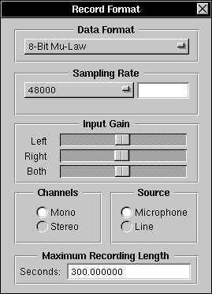

The Record Format Panel

The Record Format Panel allows you to:
 View or set your current recording Data Format. Resound queries your sound hardware for available data formats, and includes those it can handle in this pull-down menu. Non-"default" data formats may not be available on all systems. See Important Note Below!
View or set your current recording Data Format. Resound queries your sound hardware for available data formats, and includes those it can handle in this pull-down menu. Non-"default" data formats may not be available on all systems. See Important Note Below!
 View or set your current Sampling Rate. Resound queries your sound hardware for available sampling rates, and includes those it can handle in this pull-down menu. If your hardware can handle arbitrary sampling rates, the pull-down menu changes to "User-Defined:", and you may set the rate to any arbitrary value in the text field to the right. Non-"default" sampling rates may not be available on all systems. See Important Note Below!
View or set your current Sampling Rate. Resound queries your sound hardware for available sampling rates, and includes those it can handle in this pull-down menu. If your hardware can handle arbitrary sampling rates, the pull-down menu changes to "User-Defined:", and you may set the rate to any arbitrary value in the text field to the right. Non-"default" sampling rates may not be available on all systems. See Important Note Below!
 View or set the number of recording Channels. See Important Note Below!
View or set the number of recording Channels. See Important Note Below!
Important Note: Because of an apparent weakness in NeXT's Sound Kit, Resound can query your computer hardware for either its available recording Data Formats, Sampling Rates, or number of recording Channels, but can't determine which are allowed to be used together. In some cases, using an invalid sampling-rate-data-format-channel-number combination can result in the recording system getting confused and Resound unable to record until you quit from Resound and launch it again. It's up to you to experiment or otherwise find out what combinations can be used properly.
 Change and view the current recording Input Gain on your system, with either Left and Right channels, or Both channels at the same time. Input Gain may not be available on all systems.
Change and view the current recording Input Gain on your system, with either Left and Right channels, or Both channels at the same time. Input Gain may not be available on all systems.
 View or set your current recording Source, to either Line Out or Microphone. On some systems, there may be no difference (even if you have separate Line/Mic input jacks).
View or set your current recording Source, to either Line Out or Microphone. On some systems, there may be no difference (even if you have separate Line/Mic input jacks).
 Specify the Maximum Recording Length. The default is 300 seconds, or 5 minutes.
Specify the Maximum Recording Length. The default is 300 seconds, or 5 minutes.
Many Record Format Panel settings are stored as NeXTSTEP defaults, so they stay the same when you launch Resound again.